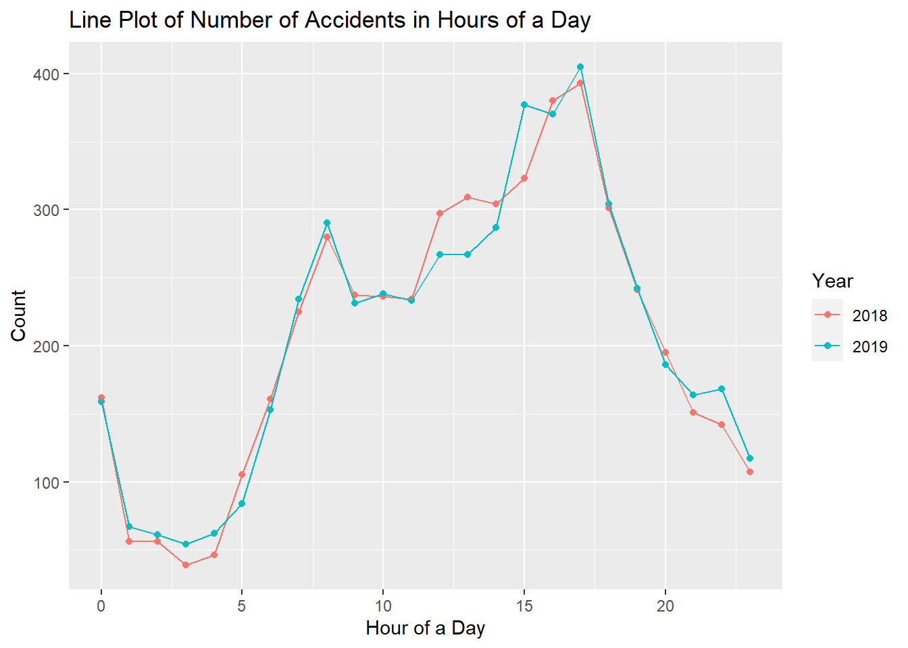

Chapter 5 Results
In this part, we will show our EDA results in three categories related to vehicles involved in accidents, cases information and individuals in accidents.
5.1 Aspect of Accident Vehicles

From this plot, we can see:
- Most of the accidents happen when cars go straight Ahead.
- Many accidents also happen during parking, stopping in traffic, slowing and stopping and making left or right turn.
- The patterns of all these prior actions are similar between 2018 and 2019. One interesting thing is that in 2018, there is no accidents related to Police Pursuit, but in 2019, there is a few cases.
Thus, it looks like in the situations when drivers are going fast ahead or driving in a crowded place, such as in traffic or in parking lot, accidents are more likely to happen than the other prior actions.

Since there are about 30 unique types of descriptions on accidents, I select the top 11 most frequent and reasonable textual descriptions on the causes of accidents. From this plot, we can see that:
- “Driver Inattention” is the top reason causing accidents.
- “Following too closely”, “Failure to yield Right-of-Way” and “Unsafe Speed” also cause many accidents.
- In 2019, there are further more accidents about “Passing or lane Usage Improper” and “Backing Unsafely”.
- In 2019, there are much more accidents due to “Animal’s” Action.
- In 2019, there are less accidents due to “Alcohol Involvement”. Probably New York States took this issue seriously in 2019.
Thus, the top four categories seem to be the frequent causes for accidents. The pattern fro 2018 is different from 2019 in the other smaller causes.

This is a mosaic plot with 3 variable: Vehicle_Body_Type, Contributing_Factor and Year.
Since there are multiple unique Vehicle Body Types, we filter on the top 5 types involved in accidents. We also filter on contributing_Factor: E stands for “environmental factor” and “V” stands for “vehicle factor”.
From this plot, we can see:
- There are more accidents of “4 Door Sedan” and “Suburban” than the other vehicle types. Probably majority of vehicle is of these two types.
- There are more accidents related to environmental/vehicle factor in 2019 than in 2018.
- Larger proportion of accidents of “4 Door Sedan” and “2 Door Sedan” is related to “environmental factor” in 2019 than in 2018.
From this plot, we can see:
- For “4 Engine Cylinder” vehicles, “Sedan” and “Suburban” are more likely to have accidents.
- For “8 Engine Cylinder” vehicles, “Pickup Truck” and “Van Truck” are more likely to have accidents.
- There are a few cars with “5 Engine Cylinder” involved in accidents.
5.2 Aspect of Accident Cases

For the case data, we looked into the count of different types of accidents at first. We can see apparently from the bar plot that:
- Property Damage Accident occurred the most.
- Property Damage with Injury Accident.
- Fatal Accident happened the least.

Then we used a cleveland plot to see where accidents happened the counties in New York State with the top 8 accident frequency:
- Crash accidents happened the most in “Queens” County.
- A very large amount of accidents happen in “Queens”, “Nassau”, “Suffolk” and “Kings”.
- There are other counties other than these 8 counties, but each of them has a relatively much smaller proportion of accidents when compared with the first 4 counties above.

In this plot, we visualize the variation of number of accidents in Hours of a day. The line plots are split by years.
- Two years have the same trend.
- From 12PM-3PM, number of accidents decreases. It’s going late, so there are fewer cars on the road and thus fewer accidents.
- From 4PM-8PM, number of accidents increases because people in various occupations are start going to work.
- From 9PM-10PM, the number of accidents drops a little bit. We are not sure why. probably many people has already arrived to their work places, so there are relatively fewer cars on the road.
- From 11PM-17PM, the number of accidents keeps increasing and finally reaches the peak of the day at 17PM. In this period, the city is in the busiest mode. Especially at around 17PM, people finish their jobs and travel to other places.
- Since 18PM, the number of accidents keeps dropping as the sun goes down.
In this plot, we use a heatmap to show the frequency of accidents in specific “Road Type” and “Road Surface Condition”. In “Road Type”, “straight and level” has much more intensive weight than the other types because majority of road is this type. Thus, for visualization purpose, we exclude this type and focus on the other less common types:
- Even if we exclude the “straight and level” road type, “straight and Grade” has the top frequency. This is aligned with the finding in the first section that most of accidents happen when the cars go straight ahead. Probably some drivers tend to drive faster in straight road.
- Whatever the road surface is dry, wet or with snow, the “Straight and Grade” road still have the largest frequency.
- When the road is on “Hill Crest”, there are only a few accidents. Of course there are much less these road types. However, on hill crest, drivers are also drive more carefully than usual.
5.3 Aspect of Individuals in Accidents
From this plot, we can see that:
- In each age group, more males are involved in accidents than females.
- The number of accidents is low before 18 years old. These people are mostly the passengers.
- After 18 years old, the number of accidents increases dramatically and reaches the peak in age of 25. Probably young people are tend to drive less safely.
- Then, the number of accidents is constantly decreasing.
Since majority of people in the accident are uninjured or only minor injured, we decided to explore the patterns in serious injuries.
- More males are injured to death than females.
- Females are easire to be shocked.
- More males are recorded as unconscious or semiconscious. It is possible that males tend to involve in more serious accidents.
We use this alluvial plot show the flow between Sex, Safety Equipment Status and Injury Severity:
- More accidents happen when drivers have safety equipment deployed.
- When safety equipment is deployed, more males are injured than females.
- When safety equipment is deployed, drivers are less likely to be injured.
- When safety equipment is partly deployed, males are more likely to be uninjured.